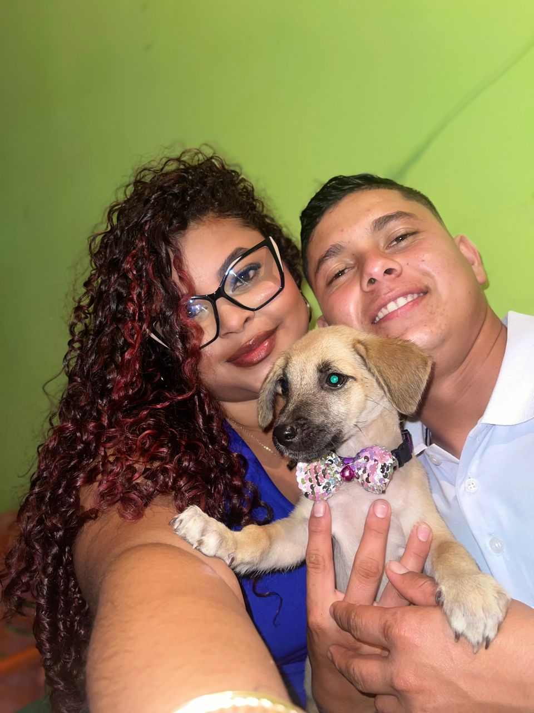
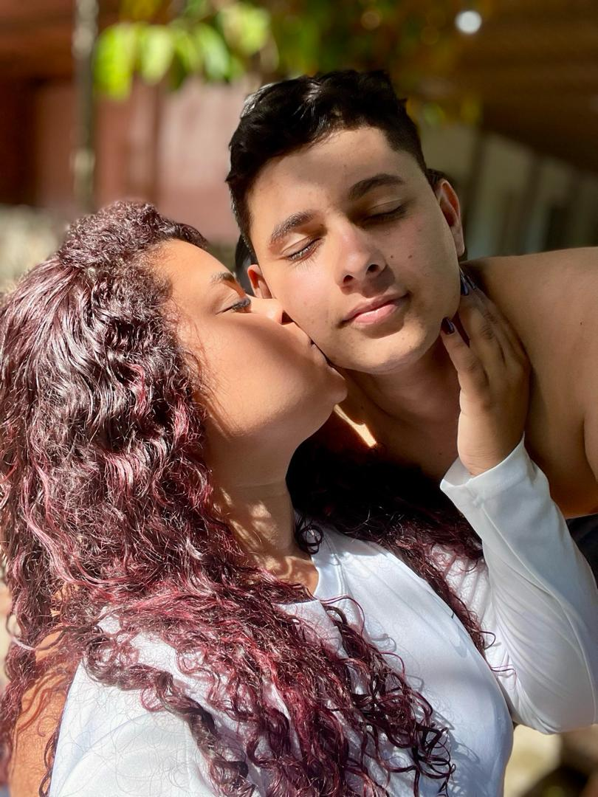
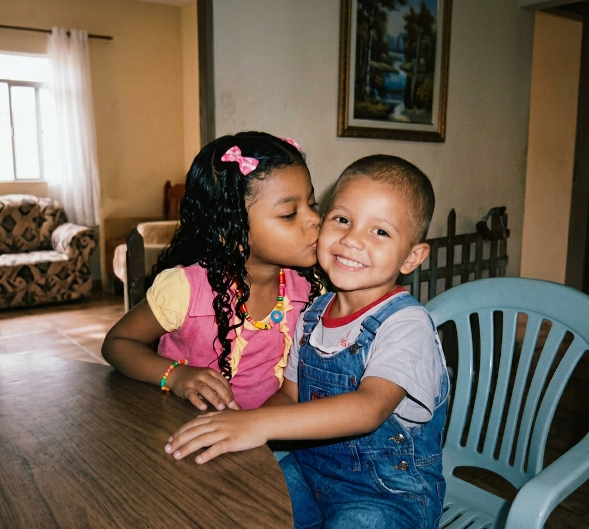
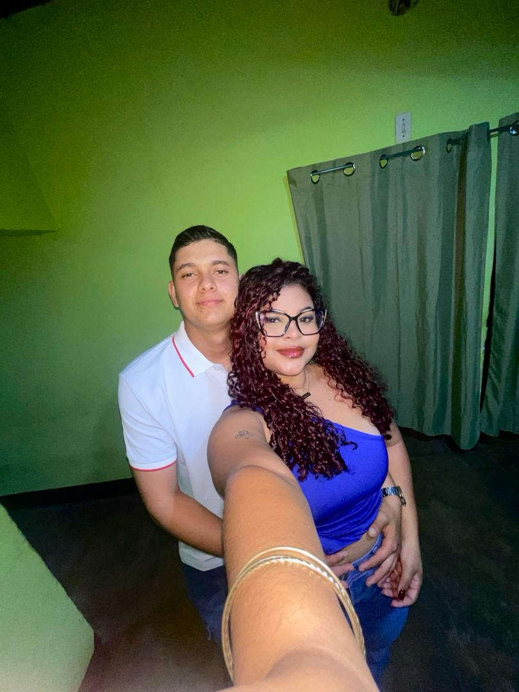

¡Feliz Cumpleaños Hermoso de mi Corazón!
Que Dios se encargue de bendecirte y protejerte cada dia de tu vida
💘
Que Dios se encargue de bendecirte y protejerte cada dia de tu vida




Que Dios te colme en salud y bendición para que alcances tus sueños y metas, pero sobre todo te de sabiduría y la madurez suficiente que eso conlleva, gracias por el caballero que eres, estoy muy orgullosa del hombre que afronta dia a dia sus responsabilidades con fundamento y honor.
Tu abuela siempre está contigo y observa con mucho orgullo lo que construyó en ti, un corazón noble que ama y cuida sin fronteras, ella te sigue cuidando y ve que lo que algun dia le prometiste, lo estas cumpliendo justo como ella lo quería, sientete afortunado de tener ese ángel que nunca te dejará sólo
Te amo en todos los universos que puedan existir y estoy segura que la Alondra de esos universos estarían dispuestas a conocerte una vez más.